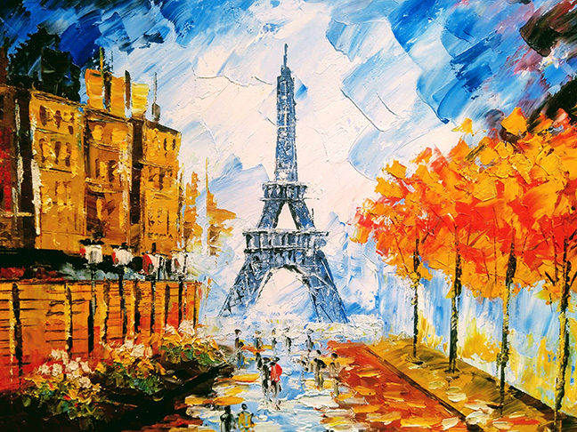
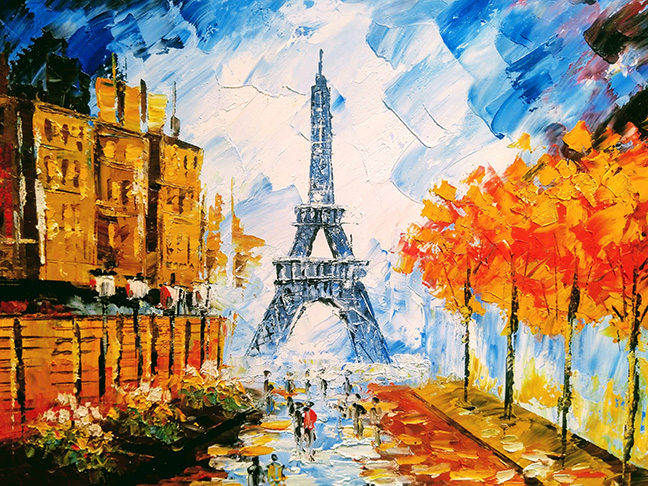

Who Can Be a Friend? Everyone!
Anyone can become a Friend of Arte Del Mundo, and help this worthy enterprise to grow and prosper. You don’t have to know anything about art. In fact, one of the benefits of becoming a Friend is that you can learn about various kinds of art, and how the artists create their works. See the benefits list below.